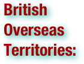
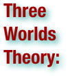
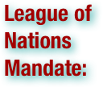

Imperialism Terms
The Congo Free State was privately controlled by Leopold II, King of the Belgians through a non-governmental organization, the Association internationale africaine. Leopold was the sole shareholder and chairman, who increasingly used it for rubber, copper and other minerals in the upper Lualaba River basin (though it had been set up on the understanding that its purpose was to uplift the local people and develop the area). The state included the entire area of the present Democratic Republic of the Congo and existed from 1885 to 1908. The Congo Free State eventually earned infamy due to the increasingly brutal mistreatment of the local peoples and plunder of natural resources, leading to its abolition and annexation by the government of Belgium in 1908. Under Leopold II's administration, the Congo Free State became the site of one of the greatest international scandals of the early twentieth century. The report of the British Consul Roger Casement led to the arrest and punishment of white officials who had been responsible for killings during a rubber-collecting expedition in 1903 (including one Belgian national for causing the shooting of at least 122 Congolese people). The massive loss of life and atrocities inspired literature such as Joseph Conrad's Heart of Darkness, and outcries even from upholders of the colonial mission like Winston Churchill. The general consensus is that the forced labour system directly and indirectly eliminated 20% of the population of the Congo. European and U.S. reformers exposed the conditions in the Congo Free State to the public in 1900 through the Congo Reform Association. Also active in exposing the activities of the Congo Free State was the author Arthur Conan Doyle, whose book The Crime of the Congo was widely read in the early 1900s. By 1908, public pressure and diplomatic maneuvers led to the end of Leopold II's rule and to the annexation of the Congo as a colony of Belgium, known as the Belgian Congo. (wikipedia.org. Accessed on August 9, 2011.)
.pdf (. . . )


The Age of Discovery, also known as the Age of Exploration, was a period in history starting in the early 15th century and continuing into the early 17th century during which Europeans engaged in intensive exploration of the world, establishing direct contacts with Africa, the Americas, Asia and Oceania and mapping the planet. Historians often refer to the 'Age of Discovery' as the pioneer Portuguese and Spanish long-distance maritime travels in search of alternative trade routes to "the Indies", moved by the trade of gold, silver and spices. The Portuguese began systematically exploring the Atlantic coast of Africa from 1418, under the sponsorship of Prince Henry, reaching the Indian Ocean by this route in 1488. In 1492, racing to find a trade route to Asia, the Spanish monarchs funded Christopher Columbus’s plan to sail west to reach the Indies by crossing the Atlantic. He landed on an uncharted continent, then seen by Europeans as a new world, America. To prevent conflict between Portugal and Spain, a treaty was signed dividing the world into two regions of exploration, where each had exclusive rights to claim newly discovered lands. In 1498, a Portuguese expedition commanded by Vasco da Gama finally achieved the dream of reaching India by sailing around Africa, opening up direct trade with Asia. Soon, the Portuguese sailed further eastward, to the valuable spice islands in 1512, landing in China one year later. East and west exploration overlapped in 1522, when Portuguese navigator Ferdinand Magellan led a Spanish expedition West, achieving the first circumnavigation of the world, while Spanish conquistadors explored inland the Americas, and later, some of the South Pacific islands. In 1495, the French and English and, much later, the Dutch entered the race of exploration after learning of these exploits, defying the Iberian monopoly on maritime trade by searching for new routes, first to the north, and into the Pacific Ocean around South America, but eventually by following the Portuguese around Africa into the Indian Ocean; discovering Australia in 1606, New Zealand in 1642, and Hawaii in 1778. Meanwhile, from the 1580s to the 1640s Russians explored and conquered almost the whole of Siberia. (wikipedia.org. Accessed on August 9, 2011.)

The American Anti-Imperialist League was an organization established in the United States on June 15, 1898 to battle the American annexation of the Philippines as an insular area. The anti-imperialists opposed the expansion because they believed imperialism violated the credo of republicanism, especially the need for "consent of the governed." They did not oppose expansion on commercial, constitutional, religious, or humanitarian grounds; rather they believed that annexation and administration of backward tropical areas would mean the abandonment of American ideals of self-government and isolation - ideals expressed in the Declaration of Independence, Washington's Farewell Address and Lincoln's Gettysburg Address. The Anti-Imperialist League represented an older generation and were rooted in an earlier era; they were defeated in terms of public opinion, the 1900 election, and the actions of Congress and the President because most of the younger Progressives who were just coming to power supported imperialism. (wikipedia.org. Accessed on August 9, 2011.)

American imperialism is a term referring to the political, economic, military and cultural influence of the United States. The concept of an American Empire was first popularized in the aftermath of the Spanish–American War of 1898 and the annexation of the Philippines. (wikipedia.org. Accessed on August 9, 2011.)

American pioneers are any of the people in American history who migrated west to join in settling and developing new areas. The term especially refers to those who were going to settle any territory which had previously not been settled or developed by European or American society, although the territory may have been inhabited by or utilized by native peoples. The pioneer concept and ethos greatly predate the migration to parts of the United States now called Western, as many places now considered as East were also settled by pioneers from the coast. For example, Daniel Boone, a key figure in American pioneer history, settled in Kentucky, when that "Dark and Bloody Ground" was still undeveloped. One important development in the Western settlement was the Homestead Act, which provided formal legislation which regulated the settlement process. (wikipedia.org. Accessed on August 9, 2011.)


The Armenian Genocide—also known as the Armenian Holocaust, the Armenian Massacres and, by Armenians, as the Great Crime—refers to the deliberate and systematic destruction of the Armenian population of the Ottoman Empire during and just after World War I. It was implemented through wholesale massacres and deportations, with the deportations consisting of forced marches under conditions designed to lead to the death of the deportees. The total number of resulting Armenian deaths is generally held to have been between one and one and a half million. Other ethnic groups were similarly attacked by the Ottoman Empire during this period, including Assyrians and Greeks, and some scholars consider those events to be part of the same policy of extermination. It is widely acknowledged to have been one of the first modern genocides, as scholars point to the systematic, organized manner in which the killings were carried out to eliminate the Armenians, and it is the second most-studied case of genocide after the Holocaust. The word genocide was coined in order to describe these events. The starting date of the genocide is conventionally held to be April 24, 1915, the day that Ottoman authorities arrested some 250 Armenian intellectuals and community leaders in Constantinople. Thereafter, the Ottoman military uprooted Armenians from their homes and forced them to march for hundreds of miles, depriving them of food and water, to the desert of what is now Syria. Massacres were indiscriminate of age or gender, with rape and other sexual abuse commonplace. The majority of Armenian diaspora communities were founded as a result of the Armenian genocide. (wikipedia.org. Accessed on August 9, 2011.)

Banana republic is a pejorative term that refers to a politically unstable country dependent upon limited primary productions (e.g. bananas), and ruled by a small, self-elected, wealthy, corrupt politico-economic plutocracy or oligarchy. The term banana republic originally denoted the fictional “Republic of Anchuria”, a “servile dictatorship” that abetted (or supported for kickbacks) the exploitation of large-scale plantation agriculture, especially banana cultivation. As a political science term banana republic is a descriptor first used by the American writer O. Henry in Cabbages and Kings (1904), a book of thematically related short stories derived from his 1896–97 residence in Honduras, where he was hiding from U.S. law for bank embezzlement. A banana republic is a commercial enterprise for profit by collusion between the State and favored monopolies, whereby the profits derived from private exploitation of public lands is private property, and the debts incurred are public responsibility. Such an imbalanced economy reduces the national currency to devalued paper-money, hence, the country is ineligible for international development credit and remains limited by the uneven economic development of town and country. Kleptocracy, government by thieves, features influential government employees exploiting their posts for personal gain (embezzlement, fraud, bribery, etc.), with the resultant deficit repaid by the native working people who “earn money”, rather than “make money”. Because of foreign (corporate) manipulation, the government is unaccountable to its nation, the country’s private sector–public sector corruption operates the banana republic, thus, the national legislature usually are for sale, and function mostly as ceremonial government. (wikipedia.org. Accessed on August 9, 2011.)


The British Empire comprised the dominions, colonies, protectorates, mandates, and other territories ruled or administered by the United Kingdom. It originated with the overseas colonies and trading posts established by England in the late 16th and early 17th centuries. At its height it was the largest empire in history and, for over a century, was the foremost global power. By 1922 the British Empire held sway over about 458 million people, one-quarter of the world's population at the time, and covered more than 33,700,000 km2 (13,012,000 sq mi), almost a quarter of the Earth's total land area. As a result, its political, linguistic and cultural legacy is widespread. At the peak of its power, it was often said that "the sun never sets on the British Empire" because its span across the globe ensured that the sun was always shining on at least one of its numerous territories. During the Age of Discovery in the 15th and 16th centuries, Portugal and Spain pioneered European exploration of the globe, and in the process established large overseas empires. Envious of the great wealth these empires bestowed, England, France and the Netherlands began to establish colonies and trade networks of their own in the Americas and Asia. A series of wars in the 17th and 18th centuries with the Netherlands and France left England (Britain, following the 1707 Act of Union with Scotland) the dominant colonial power in North America and India. The loss of the Thirteen Colonies in North America in 1783 after a war of independence deprived Britain of some of its oldest and most populous colonies. British attention soon turned towards Africa, Asia and the Pacific. Following the defeat of Napoleonic France in 1815, Britain enjoyed a century of almost unchallenged dominance, and expanded its imperial holdings across the globe. Increasing degrees of autonomy were granted to its white settler colonies, some of which were reclassified as dominions. The growth of Germany and the United States had eroded Britain's economic lead by the end of the 19th century. Subsequent military and economic tensions between Britain and Germany were major causes of the First World War, during which Britain relied heavily upon its Empire. The conflict placed enormous financial strain on Britain, and although the Empire achieved its largest territorial extent immediately after the war, it was no longer a peerless industrial or military power. The Second World War saw Britain's colonies in South-East Asia occupied by Japan, which damaged British prestige and accelerated the decline of the Empire, despite the eventual victory of Britain and its allies. India, Britain's most valuable and populous possession, won independence within two years of the end of the war. After the end of the Second World War, as part of a larger decolonization movement by European powers, most of the territories of the British Empire were granted independence, ending with the handover of Hong Kong to the People's Republic of China in 1997. 14 territories remain under British sovereignty, the British Overseas Territories. After independence, many former British colonies joined the Commonwealth of Nations, a free association of independent states. 16 Commonwealth nations share their head of state, Queen Elizabeth II, as Commonwealth realms. (wikipedia.org. Accessed on August 9, 2011.)

The Belgian colonial empire consisted of three colonies possessed by Belgium between 1901 and 1962: Belgian Congo (now Democratic Republic of the Congo), Rwanda and Burundi. The empire was unlike those of the major European imperial powers in that roughly 98% of it was just one colony (about 76 times larger than Belgium)—the Belgian Congo—which had originated as the private property of the country's king, Leopold II, rather than being gained through the political action of the Belgian state. There was a tendency within Belgium to refer to its overseas possessions as 'the colonies' rather than 'the empire'. In addition, unlike other countries of the period with far-flung colonies, such as Britain or France, colonial Belgium did not have a monarch styled 'Emperor'. (wikipedia.org. Accessed on August 9, 2011.)

The Belgian Congo was the formal title of present-day Democratic Republic of the Congo (DRC) between King Leopold II's formal relinquishment of his personal control over the state to Belgium on 15 November 1908, and Congolese independence on 30 June 1960. (wikipedia.org. Accessed on August 9, 2011.)


The British Overseas Territories are fourteen territories of the United Kingdom which, although they do not form part of the United Kingdom itself, fall under its jurisdiction. They are remnants of the British Empire that have not acquired independence or have voted to remain British territories. The name "British Overseas Territory" was introduced by the British Overseas Territories Act 2002, and replaced the name British Dependent Territory, which was introduced by the British Nationality Act 1981. Before 1981, the territories were known as Crown colonies. Apart from the British Antarctic Territory, which has no permanent inhabitants, and the Sovereign Base Areas on Cyprus and the British Indian Ocean Territory, which are military bases, the overseas territories all have permanent populations. Collectively they encompass an approximate land area of 667,018 square miles (1,727,570 km2) and a population of approximately 260,000 people. The British Antarctic Territory is part of a mutual recognition agreement with 4 other sovereign nations and their Antarctic territories. The UK is a participant in the Antarctic Treaty System. The territories of Jersey, and Guernsey, and the Isle of Man, though also under the sovereignty of the British Crown, have a different constitutional relationship with the United Kingdom, and are classed as Crown Dependencies. The British Overseas Territories and Crown Dependencies are distinct from the Commonwealth of Nations, a voluntary association of countries which mostly have historic links to the British Empire. (wikipedia.org. Accessed on August 9, 2011.)

In agriculture, a cash crop is a crop which is grown for profit. The term is used to differentiate from subsistence crops, which are those fed to the producer's own livestock or grown as food for the producer's family. In earlier times cash crops were usually only a small (but vital) part of a farm's total yield, while today, especially in the developed countries, almost all crops are mainly grown for cash. In non-developed nations, cash crops are usually crops which attract demand in more developed nations, and hence have some export value. In many tropical and subtropical areas, jute, coffee, cocoa, sugar cane, bananas, oranges and cotton are common cash crops. In cooler areas, grain crops, oil-yielding crops and some vegetables and herbs are predominate; an example of this is the United States, where corn, wheat, soybean are the predominant cash crops. Coca, poppies and cannabis are other popular black-market cash crops, the prevalence of which varies. In the United States cannabis is considered by some to be the most valuable cash crop. Prices for major cash crops are set in commodity markets with global scope, with some local variation (called basis) based on freight costs and local supply and demand balance. A consequence of this is that a nation, region, or individual producer relying on such a crop may suffer low prices should a bumper crop elsewhere lead to excess supply on the global markets. This system is criticized by traditional farmers. (wikipedia.org. Accessed on August 9, 2011.)


A chartered company is an association formed by investors or shareholders for the purpose of trade, exploration and colonization. . . Companies enabled merchants to band together to undertake ventures requiring more capital than was available to any one merchant or family. Typically, these companies were formed from the sixteenth century onwards by groups of European investors to underwrite and profit from the exploration of Africa, India, the Caribbean and North America, usually under the patronage of one state, which issued the company's charter. But chartered companies go back into the medieval period. One claimed to be the oldest is the Stora Enso with a charter of 1347 for a copper mine. Chartered companies enabled states to use private resources for exploration and trade beyond the means of the limited resources of the treasury, which is a liberal form of indirect rule; some companies did themselves employ a form of indirect rule of territories through traditional leaders, such as princely states with whom they (not the European state) made treaties. Chartered companies were usually formed, incorporated and legitimized under a royal or, in republics, an equivalent government charter. This document set out the terms under which the company could trade; defined its boundaries of influence, and described its rights and responsibilities. For example, the charter of the British South Africa Company, given by Queen Victoria, allowed the company to: 1) Trade with African rulers such as King Lobengula, 2) Form banks, 3) Own, manage and grant or distribute land, and 4) Raise its own police force (the British South Africa Police). In return, the British South Africa Company agreed to develop the territory it controlled; to respect existing African laws; to allow free trade within its territory and to respect all religions. Chartered companies in many cases benefited from the trade monopolies (such as the English Royal African Company, which held a monopoly on African slaving from 1672 to 1698). In order to carry out their many tasks, which in many cases included functions - such as security and defense - usually reserved for a sovereign state, some companies achieved relative autonomy. A few chartered companies such as the British Honorable East India Company (HEIC) and Dutch Verenigde Oostindische Compagnie (VOC) had military and naval forces of their own that dwarfed even the average European state's armed forces, and adequate funds to buy the best men and equipment, in effect making them a state within a state. More chartered companies were formed during the late nineteenth century's "Scramble for Africa" with the purpose of seizing, colonizing and administering the last 'virgin' African territories, but these proved generally less profitable than earlier trading companies. In time, most of their colonies were either lost (often to other European powers) or transformed into crown colonies. The last chartered company to administer territory directly in Africa was the Companhia de Moçambique in Portuguese East Africa (now Mozambique), which handed over rule of the colonies of Manica and Sofala to the Portuguese republic's colonial government in 1942. (wikipedia.org. Accessed on August 9, 2011.)

Christianity and colonialism are often closely associated because Catholicism and Protestantism were the religions of the European colonial powers and acted in many ways as the "religious arm" of those powers. According to Edward Andrews, Christian missionaries were initially portrayed as "visible saints, exemplars of ideal piety in a sea of persistent savagery". However, by the time the colonial era drew to a close in the last half of the twentieth century, missionaries became viewed as “ideological shock troops for colonial invasion whose zealotry blinded them.” Christianity is targeted by critics of colonialism because the tenets of the religion were used to justify the actions of the colonists. For example, Toyin Falola asserts that there were some missionaries who believed that "the agenda of colonialism in Africa was similar to that of Christianity". Falola cites Jan H. Boer of the Sudan United Mission as saying, "Colonialism is a form of imperialism based on a divine mandate and designed to bring liberation - spiritual, cultural, economic and political - by sharing the blessings of the Christ-inspired civilization of the West with a people suffering under satanic oppression, ignorance and disease, effected by a combination of political, economic and religious forces that cooperate under a regime seeking the benefit of both ruler and ruled." (wikipedia.org. Accessed on August 9, 2011.)

A civilizing mission is a rationale for intervention or colonization, proposing to contribute to the spread of civilization, mostly amounting to the Westernization of indigenous peoples. It was notably the underlying principle of French and Portuguese colonial rule in the late 19th and early 20th centuries. It was influential in the French colonies of Algeria, French West Africa, and Indochina, and in the Portuguese colonies of Angola, Guinea, Mozambique and Timor. The European colonial powers felt it was their duty to bring Western civilization to what they perceived as backwards peoples. Rather than merely govern colonial peoples, the Europeans would attempt to Westernize them in accordance with a colonial ideology known as "assimilation". (wikipedia.org. Accessed on August 9, 2011.)

Cocacolonization (alternatively coca-colonization) is a term that refers to globalization or cultural colonization. It is a portmanteau of the name of the multinational soft drink maker Coca-Cola and the word colonization. The term is used to imply either: 1) the importation of Western (particularly American) goods or 2) an invasion by Western and especially American cultural values that threatens the local culture. While it is possible to use the term benignly, it has been used pejoratively to liken globalization to Westernization or Americanization. (wikipedia.org. Accessed on August 9, 2011.)

The Colonial empires were a product of the European Age of Exploration (or Age of Sail) that began with a race of exploration between the then most advanced maritime powers, Portugal and Spain, in the 15th century. . . Subsequent colonial empires included the French, Dutch, and British empires. The last, consolidated during the period of British maritime hegemony in the 19th century, became the largest empire in history by virtue of the improved transportation technologies of the time. At its height, the British Empire covered a fifth of the Earth's land area and comprised a quarter of its population. By the mid 17th century, the Tsardom of Russia, continued later as Russian Empire and the Soviet Union, became the largest contiguous state in the world, and the modern Russian Federation continues to be so to this day. Despite having "lost" its Soviet periphery, Russia has 9 time zones, stretching for about a half the world's longitude. (wikipedia.org. Accessed on August 9, 2011.)

Colonial India refers to areas of the Indian Subcontinent under the control of European colonial powers, through trade and conquest. The first European power to arrive in India was the army of Alexander the Great in 327-326 BC. The satraps he established in the north west of the subcontinent quickly crumbled after he left. Later, trade was carried between Indian states and the Roman Empire by Graeco-Roman and Egyptian sailors who reached India by ship through the Red and Arabian Seas. The spice trade between India and Europe was one of the main drivers of the world economy and was the main catalyst for the Age of Discovery. The search for the wealth and prosperity of India led to the accidental discovery of the Americas by Christopher Columbus in 1492. However, it was also near the end of the 15th century that Portuguese sailor Vasco da Gama became the first European to re-establish direct trade links with India since Roman times, by being the first to arrive by circumnavigating Africa. Having arrived in Calicut, which by then was one of the major trading ports of the eastern world, he obtained permission to trade in the city from Saamoothiri Rajah. Trading rivalries brought other European powers to India. The Dutch, English, French and Danes established trading posts in India in the early 17th century. As the Mughal Empire disintegrated in the early 18th century and then the Maratha Empire became weakened after the third battle of Panipat, the relatively weak and unstable Indian states which emerged were increasingly open to manipulation by the Europeans through dependent "friendly" Indian rulers. In the later 18th century the British and French entered into intense struggles for dominance through proxy Indian rulers and also by direct military intervention. The defeat of the redoubtable Indian ruler Tipu Sultan in 1799 marginalized French influence. This was followed by a rapid expansion of British power through the greater part of the subcontinent in the early 19th century. By the middle of the century, the British had already gained direct or indirect control over almost all of India. British India contained the most populous and valuable provinces of the British Empire and thus became known as "the jewel in the British crown". (wikipedia.org. Accessed on August 9, 2011.)

Colonial war is a blanket term relating to the various conflicts that arose as the result of overseas territories being settled by foreign powers creating a colony. The term usually refers to wars fought during the nineteenth century between European armies in Africa, Asia and the Caribbean. The wars may be split into several categories. A revolt of the indigenous population against rule by the Imperial power. In the 19th century these were rarely successful due to the technological and organizational superiority of the Imperial forces. One notable success was the Haitian slave revolt against French rule. In the 20th century these types of conflict were often termed "Wars of National Liberation" and due to better armaments and a heavily politicized leadership strategy achieved much better results by wearing down the will of the Imperial power to continue with an expensive and politically unpopular struggle rather than militarily defeating them, although the Vietnamese also managed the latter against the French at Dien Bien Phu in 1954 leading to their expulsion from Indo-China. A second category was the war of self-determination by settlers and descendants of settlers against rule by the "mother" country. This did not necessarily involve what was left of any indigenous population but often took the form of a civil war between supporters of the status quo and revolutionaries. The prime example of this was the American War of Independence against British rule followed by the various South American Wars of Liberation against the Spanish Empire. Success was often dependent on external factors and alliances, the American colonists were helped by the French winning naval superiority at a crucial time and the Greek War of Independence against the Ottoman empire was aided by the destruction of the Turkish fleet at Navarino by a combined Anglo/French/Russian fleet. A third category was the conflict with neighbors of the colony as part of Imperial policy, either expansionism such as the Anglo-Zulu and Anglo-Boer wars of the late nineteenth century and the Italian attack on Abyssinia or as part of a wider conflict such as the World War I campaigns between British/Belgian/French colonial forces and their German neighbors in Africa and Asia. (wikipedia.org. Accessed on August 9, 2011.)

In politics and history, a colony is a territory under the immediate political control of a state. For colonies in antiquity, city-states would often found their own colonies. Some colonies were historically countries, while others were territories without definite statehood from their inception. The metropolitan state is the state that owns the colony. In Ancient Greece, the city that founded a colony was called the metropolis. Mother country is a reference to the metropolitan state from the point of view of citizens who live in its colony. There is a United Nations list of Non-Self-Governing Territories. A colony is mostly ruled by another state or can be run independently. Unlike a puppet state or satellite state, a colony has no independent international representation, and its top-level administration is under direct control of the metropolitan state. The term "informal colony" is used by some historians to describe a country which is under the de facto control of another state, although this description is often contentious. (wikipedia.org. Accessed on August 9, 2011.)

Colonialism is the establishment, maintenance, acquisition and expansion of colonies in one territory by people from another territory. It is a process whereby sovereignty over the colony is claimed by the metropole and the social structure, government, and economics of the colony are changed by colonists - people from the metropole. Colonialism is a set of unequal relationships: between the metropole and the colony, and between the colonists and the indigenous population. The colonial period normally refers to a period of history from the late 15th to the 20th century when European nation states established colonies on other continents. During this time, the justifications for colonialism included various factors such as the profits to be made, the expansion of the power of the metropole and various religious and political beliefs. Colonialism and imperialism were ideologically linked with mercantilism. (wikipedia.org. Accessed on August 9, 2011.)

Colonization occurs whenever any one or more species populate an area. The term, which is derived from the Latin colere, "to inhabit, cultivate, frequent, practice, tend, guard, respect", originally related to humans. However, 19th century biogeographers dominated the term to describe the activities of birds, bacteria, or plant species. Human colonization is a narrower category than the related concept of colonialism, because whereas colonization refers to settler colonies, trading posts, and plantations, colonialism deals with this and the ruling of new territories' existing peoples. (wikipedia.org. Accessed on August 9, 2011.)

Cultural appropriation is the adoption of some specific elements of one culture by a different cultural group. It describes acculturation or assimilation, but can imply a negative view towards acculturation from a minority culture by a dominant culture. It can include the introduction of forms of dress or personal adornment, music and art, religion, language, or social behavior. These elements, once removed from their indigenous cultural contexts, can take on meanings that are significantly divergent from, or merely less nuanced than, those they originally held. (wikipedia.org. Accessed on August 9, 2011.)

The Columbian Exchange was a dramatically widespread exchange of animals, plants, culture, human populations (including slaves), communicable diseases, and ideas between the Eastern and Western hemispheres (Old World and New World). It was one of the most significant events concerning ecology, agriculture, and culture in all of human history. Christopher Columbus' first voyage to the Americas in 1492 launched the era of large-scale contact between the Old and the New Worlds that resulted in this ecological revolution, hence the name "Columbian" Exchange. The term was coined by Alfred W. Crosby, a historian, professor and author, in his 1972 book The Columbian Exchange. The Columbian Exchange greatly affected almost every society on Earth. New diseases introduced by Europeans, to which the indigenous peoples of the Americas had no immunity, depopulated many cultures. Data for the pre-Columbian population in the Americas is uncertain, but estimates of its disease-induced population losses between 1500 and 1650 range between 50 and 90 percent. On the other hand, the contact between the two areas circulated a wide variety of new crops and livestock which supported increases in population in both hemispheres. Explorers returned to Europe with maize, potatoes, and tomatoes, which became very important crops in Eurasia by the 18th century. Similarly, Europeans introduced manioc and the peanut to tropical Southeast Asia and West Africa, where they flourished and supported growth in populations on soils that otherwise would not produce large yields. (wikipedia.org. Accessed on August 9, 2011.)

Commonwealth is a traditional English term for a political community founded for the common good. Historically, it has sometimes been synonymous with "republic." More recently it has been used for fraternal associations of some sovereign nations. Most notably, the Commonwealth of Nations, an association primarily of former members of the British Empire, is often referred to as simply "the Commonwealth." (wikipedia.org. Accessed on August 9, 2011.)


Cultural imperialism is the domination of one culture over another. Cultural imperialism can take the form a general attitude or an active, formal and deliberate policy, even including (or resulting from) military action. It can also be due to economic or technological factors. A metaphor from colonialism can be employed: the cultural products of the first world "invade" the third-world and "conquer" local culture. In the stronger variants of the term, world domination (in a cultural sense) is the explicit goal of the nation-states or multinational corporations that export the culture. The term is usually used in a pejorative sense, often in conjunction with a call to reject such influence. (wikipedia.org. Accessed on August 9, 2011.)

Cultural cringe, in cultural studies and social anthropology, is an internalized inferiority complex which causes people in a country to dismiss their own culture as inferior to the cultures of other countries. It is closely related, although not identical, to the concept of colonial mentality, and is often linked with the display of anti-intellectual attitudes towards thinkers, scientists and artists who originate from a colonial or post-colonial nation. It can also be manifested in individuals in the form of "cultural alienation". In many cases, cultural cringe, or an equivalent term, is an accusation made by a fellow-national, who decries the inferiority complex and asserts the merits of the national culture. (wikipedia.org. Accessed on August 9, 2011.)

Cultural genocide is a term that lawyer Raphael Lemkin proposed in 1933 as a component to genocide. The term was considered in the 1948 United Nations Declaration on the Rights of Indigenous Peoples juxtaposed next to the term ethnocide, but it was removed in the final document, replaced with simply "genocide". The precise definition of "cultural genocide" remains unclear. (wikipedia.org. Accessed on August 9, 2011.)

Cultural hegemony is the philosophic and sociological theory, by the Marxist philosopher Antonio Gramsci, that a culturally diverse society can be dominated (ruled) by one social class, by manipulating the societal culture (beliefs, explanations, perceptions, values) so that its ruling-class worldview is imposed as the societal norm, which then is perceived as a universally valid ideology and status quo beneficial to all of society, whilst benefiting only the ruling class. (wikipedia.org. Accessed on August 9, 2011.)

Decolonization refers to the undoing of colonialism, the unequal relation of polities whereby one people or nation establishes and maintains dependent Territory (courial governments) over another. It can be understood politically (attaining independence, autonomous home rule, union with the metropole or another state) or culturally (removal of pernicious colonial effects.) The term refers particularly to the dismantlement of the Neo-Imperial empires established prior to World War I throughout Africa and Asia in the years after World War II. The United Nations Special Committee on Decolonization has stated that in the process of decolonization there is no alternative to the colonizer's allowance of self-determination, but in practice decolonization may involve peaceful or violent resistance by the native population. It may be intramural or involve the intervention of foreign powers acting individually or through international bodies such as the United Nations. Although examples of decolonization can be found as early as the writings of Thucydides, there have been several particularly active periods of decolonization in modern times. These are the breakup of the Spanish Empire in the nineteenth century; of the German, Austro-Hungarian, Ottoman, and Russian Empires following World War I; of the British, French, Dutch, and Italian colonial empires following World War II; of the Russian Empire successor union following the Cold War; and others. (wikipedia.org. Accessed on August 9, 2011.)

Dependency theory . . . is a body of social science theories predicated on the notion that resources flow from a "periphery" of poor and underdeveloped states to a "core" of wealthy states, enriching the latter at the expense of the former. It is a central contention of dependency theory that poor states are impoverished and rich ones enriched by the way poor states are integrated into the "world system." The theory arose around 1970 as a reaction to modernization theory, an earlier theory of development which held that all societies progress through similar stages of development, that today's underdeveloped areas are thus in a similar situation to that of today's developed areas at some time in the past, and that therefore the task in helping the underdeveloped areas out of poverty is to accelerate them along this supposed common path of development, by various means such as investment, technology transfers, and closer integration into the world market. Dependency theory rejected this view, arguing that underdeveloped countries are not merely primitive versions of developed countries, but have unique features and structures of their own; and, importantly, are in the situation of being the weaker members in a world market economy, whereas the developed nations were never in an analogous position; they never had to exist in relation to a bloc of more powerful and economically advanced countries than themselves. Dependency theorists argued, in opposition to free market economists and modernization theorists, that underdeveloped countries needed to reduce their connectedness with the world market so that they can pursue a path more in keeping with their own needs, less dictated by external pressures. (wikipedia.org. Accessed on August 9, 2011.)

The term empire derives from the Latin imperium (power, authority). Politically, an empire is a geographically extensive group of states and peoples (ethnic groups) united and ruled either by a monarch (emperor, empress) or an oligarchy. Geopolitically, the term empire has denoted very different, territorially-extreme states — at the strong end, the extensive Spanish Empire (16th c.) and the British Empire, at the weak end, the Holy Roman Empire (8th c.–19th c.), in its medieval and early-modern forms. Aside from the traditional usage, the term empire can be used in an extended sense to denote a large-scale business enterprise (e.g. a transnational corporation), or a political organization of either national-, regional- or city scale, controlled either by a person (a political boss) or a group authority (political bosses). An imperial political structure is established and maintained two ways: (i) as a territorial empire of direct conquest and control with force (direct, physical action to compel the emperor’s goals), and (ii) as a coercive, hegemonic empire of indirect conquest and control with power (the perception that the emperor can physically enforce his desired goals). The former provides greater tribute and direct political control, yet limits further expansion because it absorbs military forces to fixed garrisons. The latter provides less tribute and indirect control, but avails military forces for further expansion. Territorial empires (e.g. the Mongol Empire, the Median Empire) tended to be contiguous areas. The term on occasion has been applied to maritime empires or thalassocracies, (e.g. the Athenian and British Empires) with looser structures and more scattered territories. (wikipedia.org. Accessed on August 9, 2011.)

A developed country is a country that has a high level of development according to some criteria. Which criteria, and which countries are classified as being developed, is a contentious issue. Countries not fitting such definitions are classified as developing countries or undeveloped countries. (wikipedia.org. Accessed on August 9, 2011.)

“Developing country” is a term generally used to describe a nation with a low level of material well-being. Since no single definition of the term developing country is recognized internationally, the levels of development may vary widely within so-called developing countries. Some developing countries have high average standards of living. Countries with more advanced economies than other developing nations, but which have not yet fully demonstrated the signs of a developed country, are categorized under the term newly industrialized countries. (wikipedia.org. Accessed on August 9, 2011.)

The Dutch Empire consisted of the overseas territories controlled by the Dutch Republic and later, the modern Netherlands from the 17th to the 20th century. The Dutch followed Portugal and Spain in establishing an overseas colonial empire, but based on military conquest of already-existing Portuguese and Spanish settlements, and not on discovery and colonization. For this, they were aided by their skills in shipping and trade and the surge of nationalism accompanying the struggle for independence from Spain. Alongside the British, the Dutch initially built up colonial possessions on the basis of indirect state capitalist corporate colonialism, via the Dutch East and West India Companies. Dutch exploratory voyages such as those led by Willem Barents, Henry Hudson and Abel Tasman revealed to Europeans vast new territories. With Dutch naval power rising rapidly as a major force from the late 16th century, the Netherlands dominated global commerce during the second half of the 17th century during a cultural flowering known as the Dutch Golden Age. The Netherlands lost many of its colonial possessions, as well as its global power status, to the British when the metropole fell to French armies during the Revolutionary Wars. The restored portions of the Dutch Empire, notably the Dutch East Indies and Suriname, remained under Dutch control until the decline of European imperialism following World War II. Today, the Netherlands are part of a federacy called the Kingdom of the Netherlands. As of October 10, 2010, the constituent countries within the Kingdom of the Netherlands are the Netherlands, Aruba, Curaçao, and Sint Maarten. (wikipedia.org. Accessed on August 9, 2011.)

Electronic colonialism theory. . . is about the impact on the mind of repeated mass media messages, including commercials, on audiences around the world. Just as earlier colonial institutions, like Great Britain, sought out soil anywhere in the world for colonies, now multimedia giants seek to capture the eyeballs, ears and minds of millions of viewers, readers, or listeners. Disney, MTV, Blockbuster, Hollywood, CNN, BBC, Fox, Google, the Internet, and others--all seek to influence, not by force of arms, but by packaging media to attract large audiences for advertisers around the globe. The mass media over time will impact more and more individuals—primarily using the English language—to become more similar as indigenous films and artifacts become marginalized by a cultural tsunami created by high quality and mass produced media messages and systems. Electronic colonialism theory explains how mass media are leading to a new concept of empire. It will not be one based on military power or land acquisition but one based on controlling the mind. It is a psychological or mental empire. It is an evolving global "Empire of the Mind." The global media are collectively influencing the minds, attitudes, values, and languages of individuals around the globe. It is an electronic mass media driven phenomena which over time will not only expand the frontiers of the multi-national communication firms but will far exceed even the vast reach of the declining, once-great British Empire. (wikipedia.org. Accessed on August 9, 2011.)

The Stranger King concept offers a relatively new conceptual framework to study and understand global colonialism. It helps explain the apparent ease of the process whereby many indigenous peoples subjugated themselves to an alien colonial power and places state formation by colonial powers within the continuum of earlier, similar but indigenous processes. It highlights the imposition of colonialism not as the result of the breaking of the spirit of local communities by brute force, or as reflecting an ignorant peasantry's acquiescence in the lies of its self-interested leaders, but as a people's rational and productive acceptance of an opportunity offered. The concept was first developed by Marshall Sahlins in the Pacific region and is comprehensively described by David Henley using the North Sulawesi region in Indonesia as his prime case study. The Stranger King concept helps show similarities and divergences between pre-colonial and colonial processes of state-formation enabling to build with new insight on the current historiography of the colonial transition in the Asia-Pacific part of the world. (wikipedia.org. Accessed on August 9, 2011.)

The term "subaltern" . . . refers to any person or group of inferior rank and station, whether because of race, class, gender, sexual orientation, ethnicity, or religion. . . non-elites — subalterns — as agents of political and social change. They have had a particular interest in the discourses and rhetoric of emerging political and social movements, as against only highly visible actions like demonstrations and uprisings. (wikipedia.org. Accessed on August 9, 2011.)

The Empire of Japan was a Japanese political entity that existed since the Meiji Restoration on 3 January 1868 until its defeat in World War II, and the enforcement of the Constitution of the State of Japan on 3 May 1947. The country's rapid industrialization and militarization under the slogan Fukoku Kyōhei ("Enrich the Country, Strengthen the Army"), led to its emergence as a world power eventually culminating in its membership of the Axis alliance and the conquest of a large part of the Asia-Pacific region. At the height of its power in 1942, the Japanese Empire ruled over a land area spanning 7,400,000 square kilometers (2,857,000 sq. mi), making it one of the largest maritime empires in history. After several large scale military successes during the first half of the Pacific War, the Empire of Japan also gained notoriety for its war crimes against the conquered people within their Empire. After suffering many defeats and the atomic bombings of Hiroshima and Nagasaki, the Empire of Japan surrendered to the Allies on 2 September 1945. A period of occupation by the Allies followed the surrender and dissolution of the Empire, and a new constitution was created with American involvement. American occupation and reconstruction of the country continued well into the 1950s, eventually forming modern Japan. (wikipedia.org. Accessed on August 9, 2011.)

The Empire of Liberty is a theme developed first by Thomas Jefferson to identify America's world responsibility to spread freedom across the globe. Jefferson saw America's mission in terms of setting an example, expansion into the west, and by intervention abroad. Major exponents of the theme have been Abraham Lincoln (in the Gettysburg Address), Woodrow Wilson and "Wilsonianism", and George W. Bush. In the History of U.S. foreign policy the Empire of Liberty has provided motivation to fight Spanish American War (1898), World War I (1917), World War II (1941), the Cold War (1947-1991) and the War on Terror (2001-present). (wikipedia.org. Accessed on August 9, 2011.)

The English colonial empire consisted of a variety of overseas territories colonized, conquered, or otherwise acquired by the former Kingdom of England between the late 16th and the early 18th century. The first English colonies were established in North America and the West Indies, quickly followed by trading posts in the Indian subcontinent, the first at Surat, and by fortresses on the Indian coast beginning with Fort St George, established in 1639. In 1661, the marriage of King Charles II to Catherine of Braganza brought him as part of her dowry new possessions which had been Portuguese, including Tangier in North Africa and Bombay in India. In 1707, when England was united with Scotland to form the new state of Great Britain, the English colonies became the foundation of the British Empire. (wikipedia.org. Accessed on August 9, 2011.)

The start of the European colonization of the Americas is typically dated to 1492, although there was at least one earlier colonization effort. The first known Europeans to reach the Americas were the Vikings (Norse) during the 11th century, who established several colonies in Greenland and one short-lived settlement at L'Anse aux Meadows (51°N) in the area the Norse called Vinland, present day Newfoundland and to the south. Settlements in Greenland survived for several centuries, during which time the Greenland Norse and the Inuit people experienced mostly hostile contact. By the end of the 15th century, the Norse Greenland settlements had collapsed. In 1492, a Spanish expedition headed by Christopher Columbus sailed to the Americas and introduced the New World to the Western world of the time; after this, European conquest, exploration, and colonization soon followed and expanded. This first occurred along the Caribbean coasts on the islands of Hispaniola, Puerto Rico and Cuba, and since the early 16th century, extended into the interiors of both North and South America. In 1497, sailing from the north, John Cabot landed on the North American coast, and a year later, Columbus's third voyage reached the South American coast. Eventually, the entire Western Hemisphere would come under the control of European nations, leading to profound changes to its landscape, population, and plant and animal life. In the 19th century alone over 50 million people left Europe for the Americas. The post-1492 era is known as the period of the Columbian Exchange. (wikipedia.org. Accessed on August 9, 2011.)

In general, expansionism consists of expansionist policies of governments and states. While some have linked the term to promoting economic growth (in contrast to no growth / sustainable policies), more commonly expansionism refers to the doctrine of a state expanding its territorial base (or economic influence) usually, though not necessarily, by means of military aggression. Compare empire-building, colonialism, and Lebensraum. Irredentism, revanchism, "reunification" or pan-nationalism are sometimes used to justify and legitimize expansionism, but only when the explicit goal is to reconquer territories that have been lost, or to take over ancestral lands. A simple territorial dispute, such as a border dispute, is not usually referred to as expansionism. Geographic enlargement of the United States has been classed as expansionism; but geographic enlargement of the European Union has not, perhaps because the EU is viewed as an organization rather than a nation, despite the centralization of some governmental functions in the organs of the EU. (wikipedia.org. Accessed on August 9, 2011.)

An expatriate (in abbreviated form, expat) is a person temporarily or permanently residing in a country and culture other than that of the person's upbringing or legal residence. (wikipedia.org. Accessed on August 9, 2011.)

Exploitation colonialism is the national economic policy of conquering a country to exploit its natural resources and its native population. The practice of exploitation colonialism contrasts with settler colonialism, the policy of conquering a country to establish a branch of the metropole (Motherland), and for the exploitation of its natural resources and native population. A colonialist power pursues settler colonialism to relieve the pressures of over-population upon the economy and the national territory of the motherland, and to extend its territory and culture by reproducing its society in other parts of the world. A reason for which a country might practice exploitation colonialism is the immediate financial gain produced by the low-cost extraction of raw materials by means of an enslaved native people, usually administered by a colonial government. The geopolitics of an Imperialist power determine the colonial practice of either settler colonialism or of exploitation colonialism. In the example of the British Empire, white-skinned colonists settled mainly in northern North America and in Australia, where they exterminated the native populations in the course of establishing a facsimile society of the mother country (metropole). Whereas the densely populated countries of the British Raj (1858–1947), in the Indian subcontinent, and the British occupation of Egypt and South Africa, were ruled by a small populace of colonial administrators (colonial government) that redirected the local economies to exploitation management to supply the U.K. motherland with food, raw materials, and some finished goods from the colonies. (wikipedia.org. Accessed on August 9, 2011.)

The concept of the First World first originated during the Cold War, where it was used to describe countries that were aligned with the United States. These countries were democratic and capitalistic. After the fall of the Soviet Union and the end of the Cold War, the term "First World" took on a new meaning that was more applicable to the times. Since its original definition, the term First World has come to be largely synonymous with developed countries or highly developed countries (depending on which definition is being used). First World countries in general have very advanced economies and very high Human Development Indices. On the other hand, the United Nations defined the First World on the wealth of the nation's Gross National Product (GNP). The definition of First World is now less concrete than during the Cold War. . . Globalization is an increasingly important phenomenon which has been fueled largely by the First World and its connections with the other worlds. An example of globalization within the First World is the European Union which has brought much cooperation and integration to the region. Multinational corporations also provide examples of the First World's impact on globalization, as they have brought economic, political and social integration in many countries. With the rise of the multinational corporation, the problem of outsourcing has risen in many First World countries. (wikipedia.org. Accessed on August 9, 2011.)

The Fourth World refers to: 1) sub-populations socially excluded from global society; 2) nomadic, pastoral, and hunter-gatherer peoples living beyond the modern industrial norm; 3) 4th World can also refer to sub populations, existing in a First World country, with the living standards of those of the Third World, or developing countries. (wikipedia.org. Accessed on August 9, 2011.)

The French colonial empire was the set of territories outside Europe that were under French rule primarily from the 17th century to the late 1960s. This included Acadia. In the 19th and 20th centuries, the colonial empire of France was the second-largest in the world behind the British Empire. The French colonial empire extended over 12,347,000 km² (4,767,000 sq. miles) of land at its height in the 1920s and 1930s. Including metropolitan France, the total amount of land under French sovereignty reached 13,018,575 km² (4,980,000 sq. miles) at the time, which is 8.7% of the Earth's total land area. Its influence made French a widely-spoken colonial European language, along with English, Spanish, and Portuguese. France, in rivalry with Britain for supremacy, began to establish colonies in North America, the Caribbean and India, following Spanish and Portuguese successes during the Age of Discovery. A series of wars with Britain during the 18th century and early 19th century, which France lost, ended its colonial ambitions in these places, and with it what some historians term the "first" French colonial empire. In the 19th century, France established a new empire in Africa and Southeast Asia. Following World War I and especially World War II, anti-colonial movements began to challenge French authority. France unsuccessfully fought bitter wars in Vietnam and Algeria to keep its empire intact. By the end of the 1960s, many of France's colonies had gained independence, although some territories – especially islands and archipelagos – were integrated into France as overseas departments and territories. These total altogether 123,150 km² (47,548 sq. miles), which amounts to only 1% of the pre-1939 French colonial empire's area, with 2,685,705 people living in them in 2011. All of them enjoy full political representation at the national level, as well as varying degrees of legislative autonomy. (wikipedia.org. Accessed on August 9, 2011.)

Genocide is defined as "the deliberate and systematic destruction, in whole or in part, of an ethnic, racial, religious, or national group", though what constitutes enough of a "part" to qualify as genocide has been subject to much debate by legal scholars. While a precise definition varies among genocide scholars, a legal definition is found in the 1948 United Nations Convention on the Prevention and Punishment of the Crime of Genocide (CPPCG). Article 2 of this convention defines genocide as "any of the following acts committed with intent to destroy, in whole or in part, a national, ethnical, racial or religious group, as such: killing members of the group; causing serious bodily or mental harm to members of the group; deliberately inflicting on the group conditions of life, calculated to bring about its physical destruction in whole or in part; imposing measures intended to prevent births within the group; [and] forcibly transferring children of the group to another group." (wikipedia.org. Accessed on August 9, 2011.)

The German colonial empire was an overseas domain formed in the late 19th century as part of the German Empire. Short-lived colonial efforts by individual German states had occurred in preceding centuries, but Imperial Germany's colonial efforts began in 1884. Although most of Germany's African and Pacific colonies were occupied by the Empire's enemies in the first weeks of World War I, the German colonial empire officially ended with the effective date of the Treaty of Versailles on 10 January 1920 after its defeat in the war. (wikipedia.org. Accessed on August 9, 2011.)

The German Empire refers to Germany during the "Second Reich" period from the unification of Germany and proclamation of Wilhelm I as German Emperor on 18 January 1871, to 1918, when it became a federal republic after defeat in World War I and the abdication of the Emperor, Wilhelm II. The German Empire consisted of 27 constituent territories (most of them ruled by royal families). While the Kingdom of Prussia contained most of the population and most of the territory of the Reich; the Prussian leadership became supplanted by German leaders and Prussia itself played a lesser role. As Dwyer (2005) points out, Prussia's "political and cultural influence had diminished considerably" by the 1890s. The three large neighbors were Imperial Russia in the east, France in the west, both rivals, and Austria-Hungary in the south, an ally. After 1850 Germany industrialized rapidly, with a foundation in coal, iron (and later steel), chemicals and railways. From a population of 41 million people in 1871 it grew to 68 million in 1913. From a heavily rural nation in 1815, it was now predominantly urban. During its 47 years of existence, the German Empire operated as an industrial, technological and scientific giant, receiving more Nobel Prizes in science than Britain, France, Russia and the United States combined. It was a great power, with the most powerful army in the world, and its navy went from negligible to being second only to the British Empire in less than a decade. After the removal of the powerful Chancellor Otto von Bismarck in 1890 following the death of Emperor William I, the young Emperor Wilhelm II engaged in increasingly reckless foreign policies that left the Empire isolated. When the great crisis of 1914 arrived, it had only two weak allies (Austria and Turkey) left. It defeated Russia, carving out large Eastern territories in the Treaty of Brest-Litovsk, and could hold off France and Britain, but when the United States entered the war in 1917 the high command gambled on one last offensive in spring 1918 (before the Americans arrived in force), which failed. The Great War ruined the economy and dissolved faith in the authoritarian political system. The army could no longer hold off the Allied attacks and the Empire collapsed overnight in the November 1918 Revolution, and was subsequently destroyed in the Versailles treaty. (wikipedia.org. Accessed on August 9, 2011.)

Imperialism, as defined by The Dictionary of Human Geography, is "the creation and/or maintenance of an unequal economic, cultural, and territorial relationship, usually between states and often in the form of an empire, based on domination and subordination." The imperialism of the last 500 years, as described by the above work, is primarily a western undertaking that employs "expansionist – mercantilism and latterly communist – systems." Geographical domains have included the German Empire, the Mongolian Empire, the Roman Empire, the Ottoman Empire, the Holy Roman Empire, the Portuguese Empire, the Spanish Empire, the Dutch Empire, the Persian Empire, the French Empire, the Russian Empire, the Soviet Empire, the Chinese Empire, and the British Empire, but the term can equally be applied to domains of knowledge, beliefs, values and expertise, such as the empires of Christianity (see Christendom) or Islam (see Caliphate). Imperialism is usually autocratic, and also sometimes monolithic (i.e. having a massive, unchanging structure that does not allow individual variation) in character. It can be relatively benign as in Canada, or murderously brutal as in the Congo Free State. (wikipedia.org. Accessed on August 9, 2011.)

The Great Game or Tournament of Shadows in Russia, were terms for the strategic rivalry and conflict between the British Empire and the Russian Empire for supremacy in Central Asia. The classic Great Game period is generally regarded as running approximately from the Russo-Persian Treaty of 1813 to the Anglo-Russian Convention of 1907. A second, less intensive phase followed the Bolshevik Revolution of 1917. The Great Game dwindled after the United Kingdom and the Soviet Union became Allies during World War II. The term "The Great Game" is usually attributed to Arthur Conolly (1807–1842), an intelligence officer of the British East India Company's Sixth Bengal Light Cavalry. It was introduced into mainstream consciousness by British novelist Rudyard Kipling in his novel Kim (1901). (wikipedia.org. Accessed on August 9, 2011.)

Heart of Darkness is a novella written by Joseph Conrad. Before its 1902 publication, it appeared as a three-part series (1899) in Blackwood's Magazine. It is widely regarded as a significant work of English literature and part of the Western canon. The story centres on Charles Marlow, who narrates most of the book. He is an Englishman who takes a foreign assignment from a Belgian trading company as a ferry-boat captain in Africa. Heart of Darkness exposes the dark side of European colonization while exploring the three levels of darkness that the protagonist, Marlow, encounters: the darkness of the Congo wilderness, the darkness of the Europeans' cruel treatment of the natives, and the unfathomable darkness within every human being for committing heinous acts of evil. Although Conrad does not give the name of the river, at the time of writing the Congo Free State, the location of the large and important Congo River, was a private colony of Belgium's King Leopold II. In the story, Marlow is employed to transport ivory downriver. However, his more pressing assignment is to return Kurtz, another ivory trader, to civilization, in a cover-up. Kurtz has a reputation throughout the region. This symbolic story is a story within a story or frame narrative. It follows Marlow as he recounts from dusk through to late night, to a group of men aboard a ship anchored in the Thames Estuary, his Congolese adventure. The passage of time and the darkening sky during the fictitious narrative-within-the-narrative parallel the atmosphere of the story. (wikipedia.org. Accessed on August 9, 2011.)

The Herero and Namaqua Genocide is considered to have been the first genocide of the 20th century. It took place between 1904 and 1907 in German South-West Africa (modern day Namibia), during the scramble for Africa. On January 12, 1904, the Herero people, led by Samuel Maharero, rebelled against German colonial rule. In August, German general Lothar von Trotha defeated the Herero in the Battle of Waterberg and drove them into the desert of Omaheke, where most of them died of thirst. In October, the Nama people also rebelled against the Germans only to suffer a similar fate. In total, from 24,000 up to 100,000 Herero perished along with 10,000 Nama. The genocide was characterized by widespread death by starvation and thirst because the Herero who fled the violence were prevented from returning from the Namib Desert. Some sources also claim that the German colonial army systematically poisoned desert wells. In 1985, the United Nations' Whitaker Report classified the aftermath as an attempt to exterminate the Herero and Nama peoples of South-West Africa, and therefore one of the earliest attempts of genocide in the 20th century. The German government recognized and apologized for the events in 2004. (wikipedia.org. Accessed on August 9, 2011.)

Super-imperialism is a Marxist term with two possible meanings. It refers either to the hegemony of an imperialist great power over its weaker rivals, who then are called sub-imperialisms, or to a comprehensive supra-structure above a set of (theoretically) equal-righted imperialist states. – The latter meaning is the older one and had become rare by the middle of 20th century. (wikipedia.org. Accessed on August 9, 2011.)

The term Third World arose during the Cold War to define countries that remained non-aligned with either capitalism and NATO (which along with its allies represented the First World), or communism and the Soviet Union (which along with its allies represented the Second World). This definition provided a way of broadly categorizing the nations of the Earth into three groups based on social, political, and economic divisions. (wikipedia.org. Accessed on August 9, 2011.)

Imperialism in Asia traces its roots back to the late 15th century with a series of voyages that sought a sea passage to India in the hope of establishing direct trade between Europe and Asia in spices. Before 1500 European economies were largely self-sufficient, only supplemented by minor trade with Asia and Africa. Within the next century, however, European and Asian economies were slowly becoming integrated through the rise of new global trade routes; and the early thrust of European political power, commerce, and culture in Asia gave rise to a growing trade in lucrative commodities—a key development in the rise of today's modern world free market economy. In the 16th century, the Portuguese broke the monopoly of the Arabs and Italians of trade between Asia and Europe by the discovery of the sea route to India around the Cape of Good Hope. However, with the rise of the rival Dutch East India Company, Portuguese influence in Asia was gradually eclipsed. Dutch forces first established independent bases in the East (most significantly Batavia, the heavily fortified headquarters of the Dutch East India Company) and then between 1640 and 1660 wrestled Malacca, Ceylon, some southern Indian ports, and the lucrative Japan trade from the Portuguese. Later, the English and the French established settlements in India and established a trade with China and their own acquisitions would gradually surpass those of the Dutch. Following the end of the Seven Years' War in 1763, the British eliminated French influence in India and established the British East India Company as the most important political force on the Indian Subcontinent. Before the Industrial Revolution in the mid-to-late 19th century, demand for oriental goods remained the driving force behind European imperialism, and (with the important exception of British East India Company rule in India) the European stake in Asia remained confined largely to trading stations and strategic outposts necessary to protect trade. Industrialization, however, dramatically increased European demand for Asian raw materials; and the severe Long Depression of the 1870s provoked a scramble for new markets for European industrial products and financial services in Africa, the Americas, Eastern Europe, and especially in Asia. This scramble coincided with a new era in global colonial expansion known as "the New Imperialism," which saw a shift in focus from trade and indirect rule to formal colonial control of vast overseas territories ruled as political extensions of their mother countries. Between the 1870s and the beginning of World War I in 1914, the United Kingdom, France, and the Netherlands — the established colonial powers in Asia — added to their empires vast expanses of territory in the Middle East, the Indian Subcontinent, and South East Asia. In the same period, the Empire of Japan, following the Meiji Restoration; the German Empire, following the end of the Franco-Prussian War in 1871; Tsarist Russia; and the United States, following the Spanish-American War in 1898, quickly emerged as new imperial powers in East Asia and in the Pacific Ocean area. In Asia, World War I and World War II were played out as struggles among several key imperial powers—conflicts involving the European powers along with Russia and the rising American and Japanese powers. None of the colonial powers, however, possessed the resources to withstand the strains of both world wars and maintain their direct rule in Asia. Although nationalist movements throughout the colonial world led to the political independence of nearly all of the Asia's remaining colonies, decolonization was intercepted by the Cold War; and South East Asia, South Asia, the Middle East, and East Asia remained embedded in a world economic, financial, and military system in which the great powers compete to extend their influence. However, the rapid post-war economic development of the East Asian Tigers and the People's Republic of China, along with the collapse of the Soviet Union, have loosened European and North American influence in Asia, generating speculation today about the possible re-emergence of China and Japan as regional powers. (wikipedia.org. Accessed on August 9, 2011.)


The Three Worlds Theory, developed by Chinese Communist leader Mao Zedong (1893–1976), posited that international relations comprise three politico–economic worlds: the First World, the superpowers, the Second World, the superpowers' allies, and the Third World, the nations of the Non-Aligned Movement. Notably, Chairman Mao included the US and the Soviet Union in the First World group of countries. In 1974, then Chinese Vice-Premier Deng Xiaoping (1904–97), explained the Three Worlds Theory in a speech to the United Nations, explaining the politico-economic alliances of the People's Republic of China with Right-wing, reactionary governments in the late 1970s and the 1980s. The Three Worlds Theory developed by Mao Zedong was different from the Western theory of the Three Worlds. The Western theory said that the First World was the United States and its allies, the Second World was the Soviet Union and its allies, and the Third World was the neutral and nonaligned countries. Some anti-revisionist political parties and organizations were disillusioned by the Three Worlds Theory. Subsequently, in Albania, Enver Hoxha (1908–85), leader of the Party of Labour of Albania, posited an ideological alternative, opposed to both the Three Worlds Theory and to the Communist Party of the Soviet Union’s stance. This led to the Sino-Albanian split among communist parties previously aligned with China and Albania. (wikipedia.org. Accessed on August 9, 2011.)

A trading post (or as frequently a trading fort in colonial contexts or circumstances) is a place or establishment where the trading of goods takes place. The preferred travel route to a trading post or between trading posts, is known as a trade route.Trading posts were also places for people to meet and exchange the news of the world or simply the news from their home country (many of the world's trading posts were located in places which were popular destinations for emigration) in a time when not even newspapers existed. . . The annexation of trading posts along ancient trade routes took place in the 16th and 17th century by European powers like the Dutch and English. It began with the capture of Ceuta (a terminus of the trans-Saharan trade route) by the Portuguese in 1415. They went on to establish further enclaves as they explored the coasts of Africa, Arabia, India and South East Asia in search of the source of the lucrative spice trade. Trading posts were also very common in the early settlements of Canada and the United States for the trade of such things as fur. They were also used in many camps across America as places to buy snacks, items and souvenirs. The Hudson's Bay Company set up trading posts around Hudson Bay during the fur trade. Goods were traded for beaver pelts amongst the Europeans and the Native Americans. In the United States in the early 19th century, trading posts used by Native Americans were licensed by the federal government and called "factories". Tribes were to concede substantial territory to the United States in order to access the "factories" as happened at Fort Clark in the Treaty of Fort Clark in which the Osage Nation conceded most of Missouri in order to access the trading post. (wikipedia.org. Accessed on August 9, 2011.)

Indigenous peoples, or Natives, are ethnic groups who are native to a land or region, especially before the arrival and intrusion of a foreign and possibly dominating culture. They are a group of people whose members share a cultural identity that has been shaped by their geographical region. A variety of names are used in various countries to identify such groups of people, but they generally are regarded as the "original inhabitants" of a territory or region. Their right to self-determination may be materially affected by the later-arriving ethnic groups. (wikipedia.org. Accessed on August 9, 2011.)

An invasion is a military offensive consisting of all, or large parts of the armed forces of one geopolitical entity aggressively entering territory controlled by another such entity, generally with the objective of either conquering, liberating or re-establishing control or authority over a territory, forcing the partition of a country, altering the established government or gaining concessions from said government, or a combination thereof. An invasion can be the cause of a war, be a part of a larger strategy to end a war, or it can constitute an entire war in itself. Due to the large scale of the operations associated with invasions, they are usually strategic in planning and execution. (wikipedia.org. Accessed on August 9, 2011.)

The Italian Colonial Empire was created after the Kingdom of Italy joined other European powers in establishing colonies overseas during the "scramble for Africa". Modern Italy as a unified state only existed from 1861. By this time France, Spain, Portugal, Britain, and the Netherlands, had already carved out large empires over several hundred years. One of the last remaining areas open to colonization was on the African continent. By the outbreak of World War I in 1914, Italy had annexed Eritrea and Somalia, and had wrested control of portions of the Ottoman Empire, including Libya, though it was defeated in its attempt to conquer Ethiopia. The Fascist government under Italian dictator Benito Mussolini which came to power in 1922 sought to increase the size of the empire further. Ethiopia was successfully taken, four decades after the previous failure, and Italy's European borders were expanded. An official "Italian Empire" was proclaimed on 9 May 1936 following the conquering of Ethiopia. Italy sided with Nazi Germany during World War II and initially enjoyed successes. However, Allied forces eventually captured Italian overseas colonies and by the time Italy itself was invaded in 1943, its empire had all but ceased to exist. (wikipedia.org. Accessed on August 9, 2011.)


A League of Nations mandate was a legal status for certain territories transferred from the control of one country to another following World War I, or the legal instruments that contained the internationally agreed-upon terms for administering the territory on behalf of the League. These were of the nature of both a treaty and constitution which contained minority rights clauses that provided for the right of petition and adjudication by the International Court. The mandate system was established under Article 22 of the Covenant of the League of Nations, entered into on 28 June 1919. With the dissolution of the League of Nations after World War II, it was stipulated at the Yalta Conference that the remaining Mandates should be placed under the trusteeship of the United Nations, subject to future discussions and formal agreements. Most of the remaining mandates of the League of Nations (with the exception of South-West Africa) thus eventually became United Nations Trust Territories. (wikipedia.org. Accessed on August 9, 2011.)

Linguistic imperialism, or language imperialism, is a linguistics concept that "involves the transfer of a dominant language to other people. The transfer is essentially a demonstration of power—traditionally, military power but also, in the modern world, economic power—and aspects of the dominant culture are usually transferred along with the language." . . . Linguistic imperialism is often seen in the context of cultural imperialism. (wikipedia.org. Accessed on August 9, 2011.)

Manifest Destiny was the 19th century American belief that the United States was destined to expand across the North American continent, from the Atlantic Seaboard to the Pacific Ocean. It was used by Democrats in the 1840s to justify the war with Mexico; the concept was denounced by Whigs, and fell into disuse after the mid-19th century. Advocates of Manifest Destiny believed that expansion was not only wise but that it was readily apparent (manifest) and inexorable (destiny). (wikipedia.org. Accessed on August 9, 2011.)

Media imperialism is a theory based upon an over-concentration of mass media from larger nations as a significant variable in negatively affecting smaller nations, in which the national identity of smaller nations is lessened or lost due to media homogeneity inherent in mass media from the larger countries. (wikipedia.org. Accessed on August 9, 2011.)

Mercantilism is the economic doctrine that says government control of foreign trade is of paramount importance for ensuring the prosperity and security of a state. In particular, it demands a positive balance of trade. In thought and practice it dominated Western Europe from the 16th to the late-18th century. Mercantilism was usually a cause of frequent European wars in that time. It also was a motive for colonial expansion. Mercantilist theory varied in sophistication from one writer to another and evolved over time. Favors for powerful corrupting interests were often defended with ill-considered mercantilist reasoning. Today it is widely rejected in the West but lives on in the neomercantilism practiced in many Asian countries. High tariffs, especially on manufactured goods, are an almost universal feature of mercantilist policy. Other policies have included: monopolizing markets with staple ports, exclusive trade with colonies, forbidding certain trade to be carried in foreign ships, export subsidies, banning the export of gold and silver, even for payments, promoting manufacturing with research or direct subsidies, limiting wages (see Physiocracy for the contrary view), maximizing the use of domestic resources and restricting domestic consumption with non-tariff barriers to trade. Jean-Baptiste Colbert's initially successful but ultimately self-defeating work in seventeenth century France perhaps best exemplified classical mercantilism. In the English-speaking world its ideas were dealt intellectual blows by Adam Smith with the publication of The Wealth of Nations in 1776 and later David Ricardo with his explanation of comparative advantage, but policy changes did not follow in either's lifetime, even in Britain. Mercantilism reached its low-water mark in the last half of the nineteenth century as the British Empire embraced free-trade and used its power as the financial center of the world to promote the same. However, in the United States and Bismarck's Germany, Alexander Hamilton and Friedrich List, respectively, successfully advocated protectionism. Their works provided a bridge to later neomercantilism, distinguished from traditional mercantilism primarily by its adoption of neoclassical ideas and methods. Today neomercantilism is practiced in several highly successful Asian economies and their rapidly growing emulators, but also in troubled Japan. Mercantilism in its simplest form was naive bullionism, with which it is sometimes mistakenly identified. Mercantilist writers typically emphasized the circulation of money and rejected hoarding. Their frequent obsession with monetary metals accords with currently respectable ideas regarding the money supply, such as the stimulative effect of a growing money supply. Specie concerns have since been rendered moot by fiat money and floating exchange rates. In time, the heavy emphasis on money was supplanted by industrial policy, accompanied by a shift in focus from the capacity to carry on wars to promoting general prosperity. Mature neomercantilist theory recommends selective high tariffs for "infant" industries or to promote the mutual growth of countries through national industrial specialization. Currently, advocacy of mercantilist methods for maintaining high wages in advanced economies are popular among workers in those economies, but such ideas are rejected by policy makers and most economists. (wikipedia.org. Accessed on August 9, 2011.)


Mestizo is a term traditionally used in Latin America and Spain for people of mixed European and Native American heritage or descent. The term originated as a racial category in the Casta system that was in use during the Spanish empire's control of their American colonies; it was used to describe those who had one European-born parent and one who was a member of an indigenous American population. In the Casta system mestizos had fewer rights than European born persons called "Peninsular", and "Criollos" who were persons born in the New World of two European-born parents, but more rights than "Indios" and "Negros". During the colonial period, mestizos quickly became the majority group in much of what is today Latin America, and when the colonies started achieving independence from Spain, the mestizo group often became dominant. In some Latin American countries, such as Mexico, the concept of the "mestizo" became central to the formation of a new independent identity that was neither wholly Spanish nor wholly indigenous and the word mestizo acquired its current double meaning of mixed cultural heritage and actual racial descent. (wikipedia.org. Accessed on August 9, 2011.)

The metropole, from the Greek Metropolis 'mother city' (polis being a city state, hence also used for any colonizing 'mother country'; in ecclesiastical languages an archbishopric having precedence over the suffragans in its ecclesiastical province) was the name given to the British metropolitan centre of the British Empire, i.e. the United Kingdom itself. This was even extended, such that London became the metropole of the British Empire, insofar as its politicians and businessmen determined the economic, diplomatic, and military character of the rest of the Empire. By contrast, the periphery was the rest of the Empire, outside the United Kingdom itself. (wikipedia.org. Accessed on August 9, 2011.)

Miscegenation is the mixing of different racial groups through marriage, cohabitation, sexual relations, and procreation. The term miscegenation has been used since the 19th century to refer to interracial marriage and interracial sex, and more generally to the process of racial admixture, which has taken place since ancient history. The term entered historical records during European colonialism since the Age of Discovery, but societies such as China and Japan also had restrictions on marrying with peoples they considered different. Historically the term has been used in the context of laws banning interracial marriage and sex, so-called anti-miscegenation laws. It is a potentially offensive word. (wikipedia.org. Accessed on August 9, 2011.)

Neocolonialism is a term used by post-colonial critics of developed countries' involvement in the developing world. Writings within the theoretical framework of neocolonialism argue that existing or past international economic arrangements created by former colonial powers were or are used to maintain control of their former colonies and dependencies after the colonial independence movements of the post–World War II period. The term neocolonialism can combine a critique of current actual colonialism (where some states continue administrating foreign territories and their populations in violation of United Nations resolutions) and a critique of the involvement of modern capitalist businesses in nations which were former colonies. Critics adherent to neocolonialism contend that multinational corporations continue to exploit the resources of post-colonial states, and that this economic control inherent to neocolonialism is akin to the classical, European colonialism practiced from the 16th to the 20th centuries. In broader usage, neocolonialism may simply refer to the involvement of powerful countries in the affairs of less powerful countries; this is especially relevant in modern Latin America. In this sense, neocolonialism implies a form of contemporary, economic imperialism: that powerful nations behave like colonial powers of imperialism, and that this behavior is likened to colonialism in a post-colonial world. (wikipedia.org. Accessed on August 9, 2011.)

New Imperialism refers to the colonial expansion adopted by Europe's powers and, later, Japan and the United States, during the 19th and early 20th centuries; expansion took place from the French conquest of Algeria until World War I: approximately 1830 to 1914. The period is distinguished by an unprecedented pursuit of overseas territorial acquisitions. (wikipedia.org. Accessed on August 9, 2011.)

The category of newly industrialized country (NIC) is a socioeconomic classification applied to several countries around the world by political scientists and economists. NICs are countries whose economies have not yet reached First World status but have, in a macroeconomic sense, outpaced their developing counterparts. Another characterization of NICs is that of nations undergoing rapid economic growth (usually export-oriented). Incipient or ongoing industrialization is an important indicator of a NIC. In many NICs, social upheaval can occur as primarily rural, or agricultural, populations migrate to the cities, where the growth of manufacturing concerns and factories can draw many thousands of laborers. NICs usually share some other common features, including: increased social freedoms and civil rights, strong political leaders, a switch from agricultural to industrial economies, especially in the manufacturing sector, an increasingly open-market economy, allowing free trade with other nations in the world, large national corporations operating in several continents, strong capital investment from foreign countries, political leadership in their area of influence, and lowered poverty rates. (wikipedia.org. Accessed on August 9, 2011.)

The Open Door Policy is a concept in foreign affairs, which usually refers to the policy around 1900 allowing multiple Imperial powers access to China, with none of them in control of that country. As a theory, the Open Door Policy originates with British commercial practice, as was reflected in treaties concluded with Qing Dynasty China after the First Opium War (1839-1842). Although the Open Door is generally associated with China, it was recognized at the Berlin Conference of 1885, which declared that no power could levy preferential duties in the Congo basin. As a specific policy with regard to China, it was first advanced by the United States in the Open Door Notes of September-November 1899. In 1898, the United States had become an East Asian power through the acquisition of the Philippine Islands, and when the partition of China by the European powers and Japan seemed imminent, the United States felt its commercial interests in China threatened. U.S. Secretary of State John Hay sent notes to the major powers (France, Germany, the United Kingdom, Italy, Japan, and Russia), asking them to declare formally that they would uphold Chinese territorial and administrative integrity and would not interfere with the free use of the treaty ports within their spheres of influence in China. The open door policy stated that all European nations, and the United States, could trade with China. In reply, each nation tried to evade Hay's request, taking the position that it could not commit itself until the other nations had complied. However, by July 1900, Hay announced that each of the powers had granted consent in principle. Although treaties made after 1900 refer to the Open Door Policy, competition among the various powers for special concessions within China for railroad rights, mining rights, loans, foreign trade ports, and so forth, continued unabated. Technically, the term "Open Door Policy" can be only referred to as before the founding of the People's Republic of China in 1949. Regarding China's international trade policy introduced after Deng Xiaoping took office, it is termed as China's policy of opening up to the outside world. (wikipedia.org. Accessed on August 9, 2011.)

Ostsiedlung, also called German eastward expansion, was the medieval eastward migration and settlement of Germans from modern day western and central Germany into less-populated regions and countries of eastern Central Europe and Eastern Europe. The affected area roughly stretched from Slovenia to Estonia, and eastwards into Transylvania. In part, Ostsiedlung followed the territorial expansion of the Holy Roman Empire and the Teutonic Order. . . Ostsiedlung is part of a process termed Ostkolonisation ("east colonization") or Hochmittelalterlicher Landesausbau ("late medieval land consolidation"), although these terms are sometimes used synonymously. Ethnic conflicts erupted between the newly arrived settlers and local populations, sometimes bloody, and expulsions of native populations are also known In several areas under the Ostsiedlung the original population was later discriminated and pushed away from administration Ostsiedlung was heavily exploited by German nationalism as well as Nazi movement to press territorial claims of Germany, and to demonstrate supposed German superiority over non-German people, whose cultural, urban and scientific achievements in that era were rejected and presented as German. (wikipedia.org. Accessed on August 9, 2011.)

An overseas department is a department of France that is outside metropolitan France. They have the same political status as metropolitan departments. As integral parts of France and the European Union, overseas departments are represented in the National Assembly, Senate, and Economic and Social Council, vote to elect European Parliament (MEP), and also use the Euro as their currency. Each overseas department is also an overseas region. (wikipedia.org. Accessed on August 9, 2011.)

A pandemic is an epidemic of infectious disease that is spreading through human populations across a large region; for instance multiple continents, or even worldwide. A widespread endemic disease that is stable in terms of how many people are getting sick from it is not a pandemic. Further, flu pandemics exclude seasonal flu, unless the flu of the season is a pandemic. Throughout history there have been a number of pandemics, such as smallpox and tuberculosis. (wikipedia.org. Accessed on August 9, 2011.)

Plantation was an early method of colonization in which settlers were "planted" abroad in order to establish a permanent or semi-permanent colonial base. Such plantations were also frequently intended to promote Western culture and Christianity among nearby indigenous peoples, as can be seen in the early East-Coast plantations in America (such as that at Roanoke). Although the term "planter" to refer to a settler first appears as early as the 16th-century, the earliest true colonial plantation is usually agreed to be that of the Plantations of Ireland. The term "plantation" transferred to the large farms that were the economical basis of many of the 17th-century American colonies. The peak of the plantation economy was in the 18th century, especially the sugar plantations in the Caribbean that depended on slave labor. Most of that time Britain prospered as the top slaving nation in the Atlantic world. Over 2,500,000 slaves were transported to the Caribbean plantations between 1690 and 1807. Because slave life was so harsh on these plantations and slaves died without reproducing themselves, a constant supply of new slaves from Africa was required to maintain the plantation economy. What has been called a "natural decrease" among the slave population continued for two centuries. In this sense, a plantation represented a killing machine. In 1789 Saint-Domingue, producer of 40 percent of the world's sugar, was the most valuable colony on earth. Slaves outnumbered whites and coloreds by at least eight to one, but provided all of the manual labor. Slave labor created a dramatic change in the eating habits of Britons, one of the greatest in human history. In 1700, Britons used an average of four pounds of sugar a year, but by 1800 they used an average of 16 pounds a year. (wikipedia.org. Accessed on August 9, 2011.)

Post-colonialism (postcolonial theory, post-colonial theory) is a specifically post-modern intellectual discourse that consists of reactions to, and analysis of, the cultural legacy of colonialism. Postcolonialism comprises a set of theories found amongst anthropology, architecture, philosophy, film, political science, human geography, sociology, feminism, religious and theological studies, and literature. . . The ultimate goal of post-colonialism is accounting for and combating the residual effects of colonialism on cultures. (wikipedia.org. Accessed on August 9, 2011.)


A proprietary colony was a colony in which one or more individuals, usually land owners, remaining subject to their parent state's sanctions, retained rights that are today regarded as the privilege of the state, and in all cases eventually became so. This type of colonial government based on the County Palatine and resembling feudal grants of fiefs in exchange for service more than the modern concept of state sovereignty, was used by England's colonization along the Atlantic coasts of North America and the Caribbean. Most were run under a colonial charter agreement, which was reviewed by the ruling Monarch. A good example is the Province of Pennsylvania, granted to William Penn (the state still bears the name meaning "woodlands of Penn") by King Charles II of England. This type of indirect rule eventually fell out of favor as the colonies became established and administrative difficulties eased. The English Sovereigns sought to concentrate their power and authority and the colonies were converted to crown colonies, i.e. governed by officials appointed by the King replacing the people the King had previously appointed and under different terms. (wikipedia.org. Accessed on August 9, 2011.)

In history, the term protectorate has two different meanings. In its earliest inception, which has been adopted by modern international law, it is an autonomous territory that is protected diplomatically or militarily against third parties by a stronger state or entity. In exchange for this, the protectorate usually accepts specified obligations, which may vary greatly, depending on the real nature of their relationship. However, it retains sufficient measure of sovereignty and remains a state under international law. A territory subject to this type of arrangement is also known as a protected state. A second meaning came about as a result of European colonial expansion in the nineteenth century. Many colonized territories (mentioned on this page) came to be referred to as "colonial protectorates", but were not regarded as separate states under international law. Entities referred to as "international protectorates" can become so subordinated to the protecting power that in effect they lose their independent statehood, though there are exceptions. (wikipedia.org. Accessed on August 9, 2011.)

Racial integration, or simply integration includes desegregation (the process of ending systematic racial segregation). In addition to desegregation, integration includes goals such as leveling barriers to association, creating equal opportunity regardless of race, and the development of a culture that draws on diverse traditions, rather than merely bringing a racial minority into the majority culture. Desegregation is largely a legal matter, integration largely a social one. (wikipedia.org. Accessed on August 9, 2011.)


Racialism is an emphasis on race or racial considerations. Currently, racialism entails a belief in the existence and significance of racial categories, but not necessarily that any absolute hierarchy between the races has been demonstrated by a rigorous and comprehensive scientific process. Racialists usually reject some claims of racial superiority (such as "racial supremacy"), but may explicitly or implicitly subscribe to others, such as that races have acted in morally superior or inferior ways, at least in certain instances or periods of history. (wikipedia.org. Accessed on August 9, 2011.)

The right to exist is said to be an attribute of nations. According to an essay by the nineteenth century French philosopher Ernest Renan, a state has the right to exist when individuals are willing to sacrifice their own interests for the community it represents. Unlike self-determination, the right to exist is an attribute of states rather than of peoples. It is not a right recognized in international law. The phrase has featured prominently in the Arab-Israeli conflict since the 1950s. The right to exist of a de facto state may be balanced against another state's right to territorial integrity. Proponents of the right to exist trace it back to the "right of existence," said to be a fundamental right of states recognized by writers on international law for hundreds of years. (wikipedia.org. Accessed on August 9, 2011.)

The Russian colonization of the Americas covers the period, from 1732 to 1867, when the Tsarist Imperial Russian Empire laid claim to northern Pacific Coast territories in the Americas. The Russians sponsored expeditions and maintained colonial enterprises in North America to export natural resources from the sea and land for Russia and trading purposes, with supporting settlements and defensive outposts. The colonies were primarily established in present day Alaska, with some reaching to Hawaii and Northern California. In 1867, accepting the Tsar's offer to sell, the United States purchased Russian America for $7,200,000, which is known as the Alaska Purchase. This ended the Imperial Russian colonial presence in North America. (wikipedia.org. Accessed on August 9, 2011.)

The Russian Empire was a state that existed from 1721 until the Russian Revolution of 1917. It was the successor to the Tsardom of Russia and the predecessor of the Soviet Union. It was one of the largest empires in world history, surpassed in landmass only by the British and Mongolian empires: at one point in 1866, it stretched from eastern Europe across Asia and into North America. At the beginning of the 19th century the Russian Empire extended from the Arctic Ocean in the north to the Black Sea on the south, from the Baltic Sea on the west to the Pacific Ocean on the east. With 125.6 million subjects registered by the 1897 census, it had the third largest population of the world at the time, after Qing China and the British Empire. Like all empires it represented a large disparity in economic, ethnic, and religious positions. Its government, ruled by the Emperor, was the last absolute monarchy in Europe. Prior to the outbreak of World War I in August 1914 Russia was one of the five major Great Powers of Europe. (wikipedia.org. Accessed on August 9, 2011.)

The Scramble for Africa, also known as the Race for Africa or Partition of Africa was a process of invasion, occupation, colonization and annexation of African territory by European powers during the New Imperialism period, between 1881 and World War I in 1914. As a result of the heightened tension between European states in the last quarter of the 19th century, the partitioning of Africa may be seen as a way for the Europeans to eliminate the threat of a Europe-wide war over Africa. The last 59 years of the nineteenth century saw transition from ‘informal imperialism’ of control through military influence and economic dominance to that of direct rule. Attempts to mediate imperial competition, such as the Berlin Conference (1884–1885), failed to establish definitively the competing powers' claims. Many African polities, states and rulers (such as the Ashanti, the Abyssinians, the Moroccans and the Dervishes) sought to resist this wave of European aggression. However, the industrial revolution had provided the European armies with advanced weapons such as machine guns, which African armies found difficult to resist (with the exception of the Abyssinians, who were indeed successful). Also, unlike their European counterparts, African rulers, states and people did not at first form a continental united front although within a few years, a Pan-African movement did emerge. (wikipedia.org. Accessed on August 9, 2011.)

The term "Second World" is a phrase used to describe the communist states within the Soviet Union's sphere of influence or those countries that had centrally-planned economies. Along with "First World" and "Third World", the term was used to divide the nations of Earth into three broad categories. In other words, the concept of "Second World" was a construct of the Cold War and the term has largely fallen out of use since the revolutions of 1989, though it is still occasionally used to describe countries that are in between poverty and prosperity, many of which are communist and former communist countries today. Subsequently, the actual meaning of the terms "First World" and "Third World" changed from being based on political ideology to an economic definition. (wikipedia.org. Accessed on August 9, 2011.)

Settler colonialism is a specific colonial formation whereby foreign family units move into a region and reproduce. Land is thus the key resource in settler colonies, whereas natural (e.g. spices, cotton, oil) and human (e.g. labour, existing trade networks, convertible souls) resources are the main motivation behind other forms of colonialism. Colonialism typically ends, whereas settler colonialism lasts forever, except in the rare event of complete evacuation, or settler decolonization. The historian of race and settler colonialism Patrick Wolfewrites "settler colonialism destroys to replace", and insists that "invasion", in settler colonial contexts, is "a structure, not an event". (wikipedia.org. Accessed on August 9, 2011.)

Slavery is a system under which people are treated as property and are forced to work. Slaves can be held against their will from the time of their capture, purchase or birth, and deprived of the right to leave, to refuse to work, or to demand compensation. Conditions that can be considered slavery include debt bondage, indentured servitude, serfdom, domestic servants kept in captivity, adoption in which children are effectively forced to work as slaves, child soldiers, and forced marriage. Slavery predates written records and has existed in many cultures. The number of slaves today is higher than at any point in history, remaining as high as 12 million to 27 million, though this is probably the smallest proportion of the world's population in history. Most are debt slaves, largely in South Asia, who are under debt bondage incurred by lenders, sometimes even for generations. Human trafficking is primarily for prostituting women and children into sex industries. (wikipedia.org. Accessed on August 9, 2011.)

Soft power is the ability to obtain what one wants through co-option and attraction. It can be contrasted with 'hard power', that is the use of coercion and payment. Soft power can be wielded not just by states, but by all actors in international politics, such as NGOs or international institutions.

Sovereignty is the quality of having supreme, independent authority over a geographic area, such as a territory. It can be found in a power to rule and make law that rests on a political fact for which no purely legal explanation can be provided. . . For centuries past, the idea that a state could be sovereign was always connected to its ability to guarantee the best interests of its own citizens. Thus, if a state could not act in the best interests of its own citizens, it could not be thought of as a “sovereign” state. (wikipedia.org. Accessed on August 9, 2011.)

During the Cold War, the informal term "Soviet Empire" referred to the Soviet Union's influence over a number of smaller nations who were nominally independent but subject to direct military force if they tried to leave the Soviet system; see Hungarian Revolution of 1956 and Prague Spring. Though the Soviet Union was not ruled by an emperor and declared itself anti-imperialist, critics argue that it exhibited certain tendencies common to historic empires. Some scholars hold that the Soviet Union was a hybrid entity containing elements common to both multinational empires and nation states. It has also been argued that the USSR practiced colonialism as did other imperial powers. Supporters of the Soviet Union, meanwhile, rejected such claims and argued that the relationship of the Soviet Union and its many satellites was of voluntary cooperation. (wikipedia.org. Accessed on August 9, 2011.)

Soviet occupations is a term used for military occupations by the Soviet Union from the prelude to the aftermath of World War II. The term is typically used for occupations of Eastern European countries. The degree of control that the Soviet Union exercised over the governments of occupied countries varied widely from country to country, and changed over time. (wikipedia.org. Accessed on August 9, 2011.)

The Spanish–American War was a conflict in 1898 between Spain and the United States. It ended with the Americans defeating the Spaniards. Revolts against Spanish rule had been endemic for decades in Cuba and were closely watched by Americans; there had been war scares before, as in the Virginius Affair in 1873. By 1897–98, American public opinion grew angrier at reports of Spanish atrocities. After the mysterious sinking of the American battleship Maine in Havana harbor, political pressures from the Democratic Party pushed the government of President William McKinley, a Republican, into a war McKinley had wished to avoid. Compromise proved impossible, resulting in an ultimatum sent to Madrid demanding it surrender control of Cuba immediately, which was not accepted. First Madrid, then Washington, formally declared war. Although the main issue was Cuban independence, the ten-week war was fought in both the Caribbean and the Pacific. A series of one-sided American naval and military victories followed on all fronts, owing to their numerical superiority in most of the battles and despite the good performance of some of the Spanish infantry units. The result was the 1898 Treaty of Paris—which was favorable to the U.S.—followed by temporary American control of Cuba and indefinite colonial authority over Puerto Rico, Guam and the Philippines. The defeat and the collapse of the Spanish Empire was a profound shock to Spain's national psyche. The victor gained several island possessions spanning the globe and a rancorous new debate over the wisdom of imperialism. (wikipedia.org. Accessed on August 9, 2011.)

The Special Committee on Decolonization (also known as the U.N. Special Committee of the 24 on Decolonization, the Committee of 24, or simply, the Decolonization Committee) was created in 1961 by the General Assembly of the United Nations with the purpose of monitoring implementation of the Declaration on the Granting of Independence to Colonial Countries and Peoples and to make recommendations on its application. The committee is also a successor to the former Committee on Information from Non-Self-Governing Territories, with which it was merged in 1963. The full official name of the Special Committee is the Special Committee on the Situation with Regard to the Implementation of the Declaration on the Granting of Independence to Colonial Countries and Peoples. Hoping to speed the progress of decolonization, the General Assembly had adopted in 1960 the Resolution 1514, also known as the "Declaration on the Granting of Independence to Colonial Countries and Peoples" or simply "Declaration on Decolonization". It stated that all people have a right to self-determination and proclaimed that colonialism should be brought to a speedy and unconditional end. Subsequently, in 1990, the General Assembly proclaimed 1990-2000 as the International Decade for the Eradication of Colonialism and adopted a concrete Plan of Action to further its principles and relevant International Law on that matter. In 2001, the United Nations proceeded to proclaim the Second International Decade for the Eradication of Colonialism. In 1945, the year the United Nations was established, 750 million people - almost a third of the world's population - lived in Territories that were non-self-governing, dependent on colonial Powers. Today, fewer than 2 million people live in such Territories. (wikipedia.org. Accessed on August 9, 2011.)

Transculturation is a term coined by Cuban anthropologist Fernando Ortiz in 1940 to describe the phenomenon of merging and converging cultures. Transculturation encompasses more than transition from one culture to another; it does not consist merely of acquiring another culture (acculturation) or of losing or uprooting a previous culture (deculturation). Rather, it merges these concepts and additionally carries the idea of the consequent creation of new cultural phenomena (neoculturation). Ortiz also referred to the devastating impact of Spanish colonialism on Cuba's indigenous peoples as a "failed transculturation." Transculturation can often be the result of colonial conquest and subjugation, especially in a postcolonial era as native peoples struggle to regain their own sense of identity. In simple terms, transculturation reflects the natural tendency of people (in general) to resolve conflicts over time, rather than exacerbating them. (In the modern context, both conflicts and resolutions are amplified by communication and transportation technology —the ancient tendency of cultures drifting or remaining apart has been replaced by stronger forces for bringing societies together.) Where transculturation impacts ethnicity and ethnic issues the term "ethnoconvergence" is sometimes used. In one general sense, transculturation covers war, ethnic conflict, racism, multiculturalism, cross-culturalism, interracial marriage, and any other of a number of contexts that deal with more than one culture. In the other general sense, transculturation is one aspect of global phenomena and human events. (wikipedia.org. Accessed on August 9, 2011.)

Ultra-imperialism, or occasionally hyperimperialism and formerly super-imperialism, is a potential, comparatively peaceful phase of capitalism, meaning "after" or "beyond" imperialism. It was described mainly by Karl Kautsky. "Post-imperialism" is sometimes used as a synonym of "ultra-imperialism", although it can have distinct meanings. (wikipedia.org. Accessed on August 9, 2011.)

"The White Man's Burden" is a poem by the English poet Rudyard Kipling. It was originally published in the popular magazine McClure's in 1899, with the subtitle The United States and the Philippine Islands. Although Kipling's poem mixed exhortation to empire with sober warnings of the costs involved, imperialists within the United States understood the phrase "white man's burden" as a characterization for imperialism that justified the policy as a noble enterprise. The poem was originally written for Queen Victoria's Diamond Jubilee, but exchanged for "Recessional"; Kipling changed the text of "Burden" to reflect the subject of American colonization of the Philippines, recently won from Spain in the Spanish-American War. The poem consists of seven stanzas, following a regular rhyme scheme. At face value it appears to be a rhetorical command to white men to colonize and rule other nations for the benefit of those people (both the people and the duty may be seen as representing the "burden" of the title). Because of its theme and title, it has become emblematic both of Eurocentric racism and of Western aspirations to dominate the developing world. A century after its publication, the poem still rouses strong emotions, and can be analyzed from a variety of perspectives. (wikipedia.org. Accessed on August 9, 2011.)

World War I (WWI), which was called the World War or the Great War from its occurrence until 1939, and the First World War or World War I thereafter, was a major war centered in Europe that began on 28 July 1914 and lasted until 11 November 1918. It involved all the world's great powers, which were assembled in two opposing alliances: the Allies (centered around the Triple Entente) and the Central Powers (originally centered around the Triple Alliance). More than 70 million military personnel, including 60 million Europeans, were mobilized in one of the largest wars in history. More than 9 million combatants were killed, largely because of great technological advances in firepower without corresponding advances in mobility. It was the sixth deadliest conflict in world history. (wikipedia.org. Accessed on August 9, 2011.)

The United Nations (UN) are an international organization whose stated aims are facilitating cooperation in international law, international security, economic development, social progress, human rights, and achievement of world peace. The UN were founded in 1945 after World War II to replace the League of Nations, to stop wars between countries, and to provide a platform for dialogue. It contains multiple subsidiary organizations to carry out its missions. (wikipedia.org. Accessed on August 9, 2011.)


World War II, or the Second World War (often abbreviated as WWII or WW2), was a global military conflict lasting from 1939 to 1945, which involved most of the world's nations, including all of the great powers: eventually forming two opposing military alliances, the Allies and the Axis. It was the most widespread war in history, with more than 100 million military personnel mobilized. In a state of "total war," the major participants placed their entire economic, industrial, and scientific capabilities at the service of the war effort, erasing the distinction between civilian and military resources. Marked by significant events involving the mass death of civilians, including the Holocaust and the only use of nuclear weapons in warfare, it was the deadliest conflict in human history, resulting in 50 million to over 70 million fatalities. (wikipedia.org. Accessed on August 9, 2011.)